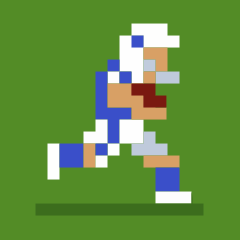

Retro Bowl, developed by New Star Games, stands out with its pixelated graphics and retro sound effects that instantly evoke nostalgia. The game’s aesthetic is a homage to the 8-bit and 16-bit era of video games, appealing not only to older gamers who grew up in that era but also to younger players seeking simplicity in gameplay that focuses more on fun than on graphics.
Gameplay Mechanics
At its core, Retro Bowl allows players to step into the shoes of a football team manager and a key player on the field. The game seamlessly integrates team management aspects, such as drafting and trading players, managing salaries, and handling media relations, with the hands-on excitement of football gameplay.
Players are responsible for guiding their team through the season, with the ultimate goal of winning the Retro Bowl, the game’s version of the Super Bowl. On the field, gameplay is intuitive and straightforward. Players control their team’s quarterback and must make quick decisions to pass the ball or run with it, all while avoiding opposing team members and managing the clock.
Customization and Progression
One of the features that make Retro Bowl particularly engaging is the ability to customize teams. Players can choose their team colors, logo, and even rename their players, giving each team a unique identity. As you progress through the seasons, the challenges increase, requiring more strategic depth in both team management and gameplay.
The game rewards successful management and gameplay with credits that can be used to upgrade facilities, hire better staff, and improve player abilities. This progression system adds depth to the game and provides players with a sense of achievement as they build their team into a championship contender.
Community and Legacy
Retro Bowl also includes a community aspect where players can share their scores and compete with friends. The game’s simplicity and quick gameplay loops make it easy to pick up and play, but hard to master, driving its popularity across gaming platforms.
The game has been highly praised for its engaging mechanics and nostalgic appeal, earning it a dedicated fan base. In an interview, the developers mentioned that the success of Retro Bowl has exceeded their expectations and has led to continuous updates and improvements based on community feedback.
Conclusion
Retro Bowl is more than just a game; it’s a nostalgic trip down memory lane, a testament to the timeless appeal of simple, fun gameplay. Whether you’re a seasoned football fan or a casual gamer looking for an engaging game that doesn’t demand the latest hardware, Retro Bowl offers something unique. It proves that in the world of video games, sometimes, looking back is the best way forward.